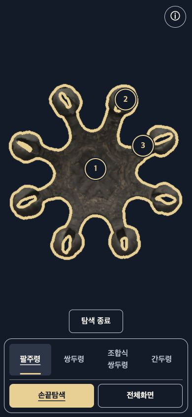
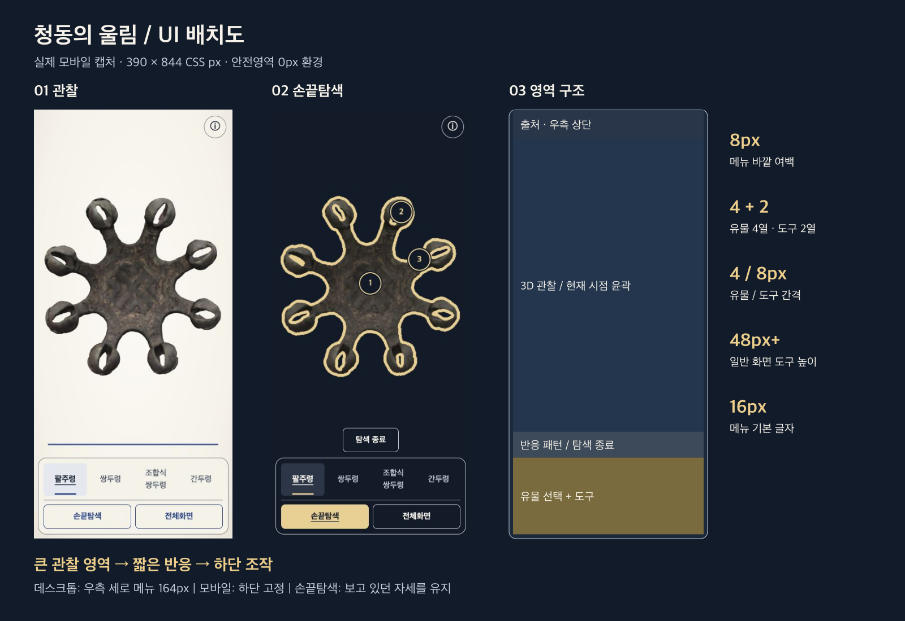
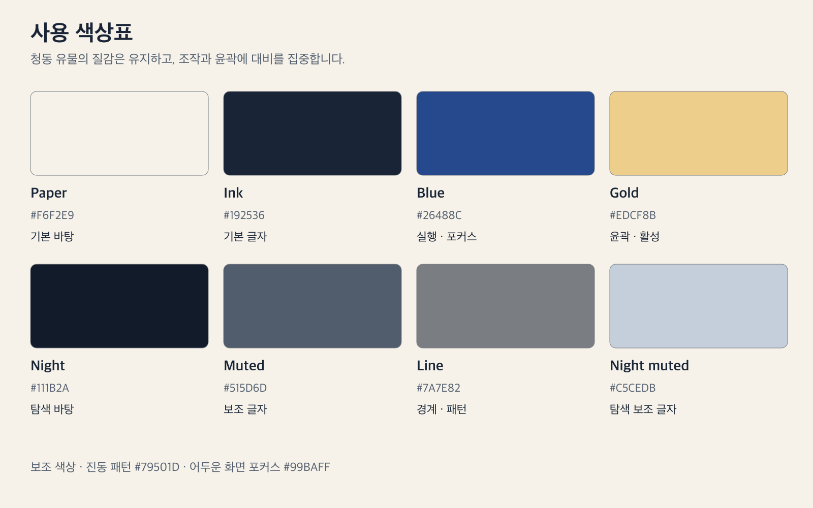
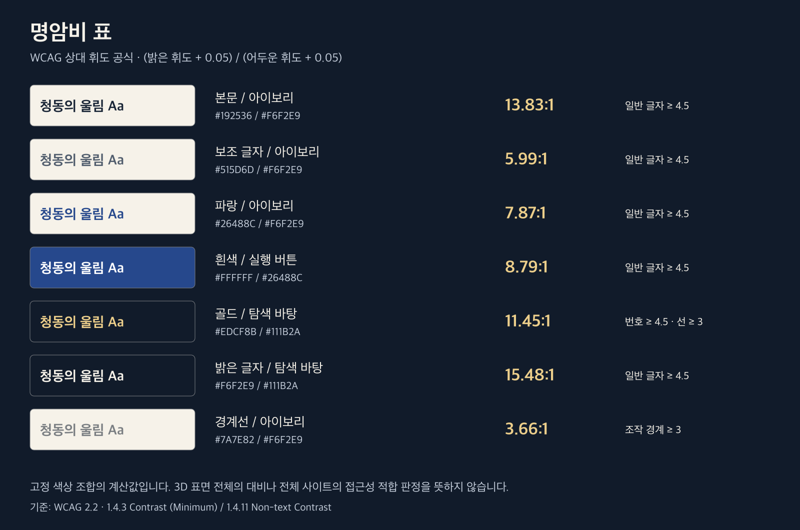
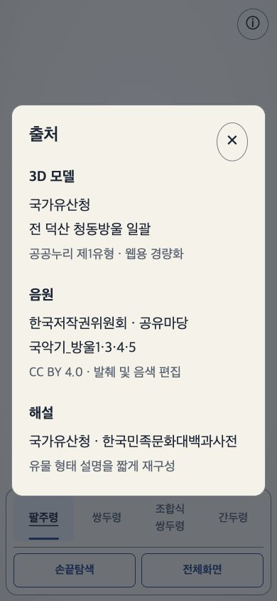
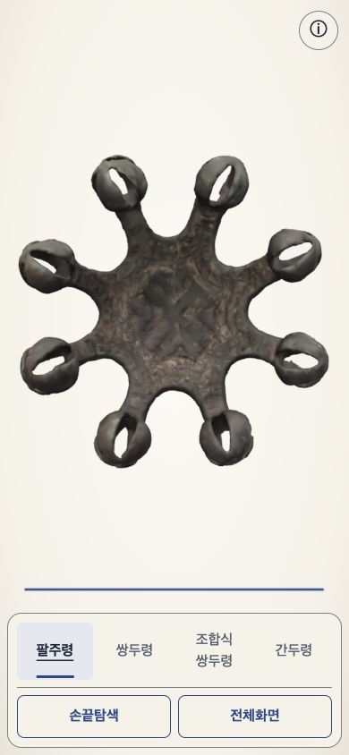
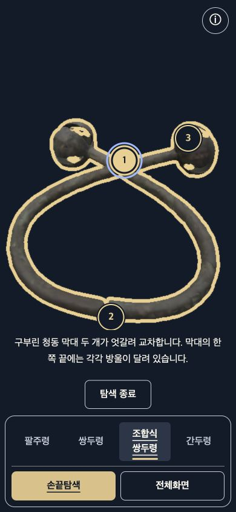

① 중앙 · 큰 관찰 영역
긴 제목과 도움말을 덜어내 유물의 형태가 먼저 보이게 했습니다. 회전 중에도 메뉴가 유물을 덮지 않도록 관찰 영역과 조작 영역을 나눴습니다.
저시력 접근성을 고려한 디지털 유물 경험
청동의 울림의 실제 화면으로 살펴보는 UI/UX 설계. 관찰할 공간은 크게, 조작은 분명하게, 설명은 필요한 순간에 제공합니다.

01 / 화면을 보는 순서
첨부 레퍼런스의 영역 구분 방식을 우리 화면에 적용했습니다. 아래 배치도는 가상 목업이 아니라 실제 390 × 844px 화면 캡처와 구현 치수로 만든 도해입니다.

긴 제목과 도움말을 덜어내 유물의 형태가 먼저 보이게 했습니다. 회전 중에도 메뉴가 유물을 덮지 않도록 관찰 영역과 조작 영역을 나눴습니다.
모바일은 유물 4종을 윗줄에, 손끝탐색과 전체화면을 아랫줄에 모았습니다. 데스크톱에서는 같은 항목을 오른쪽 세로 메뉴로 제공합니다. 이는 이 프로젝트의 기기별 배치 선택이며 접근성 표준의 의무 배치는 아닙니다.
자주 쓰지 않는 출처는 모바일 우측 상단의 정보 버튼으로 분리했습니다. 초기 팝업은 제목과 두 시작 방법만 남기고, 별도의 ‘흔들기 활성화’ 버튼은 제거했습니다.
근거: 명료한 정보 위계와 최소 정보 제공 원칙 [1], 읽기 흐름과 요소 간 간격에 대한 요구 [2].
02 / 청동의 색은 살리고, 경계는 분명하게
파랑·노랑의 선명한 구분을 참고하되, 전시 분위기에 맞게 채도와 명도를 조정했습니다. 원본 유물의 정점 색상은 그대로 두고, UI와 탐색 윤곽에 별도의 색상 역할을 부여했습니다.

밝은 바탕에서는 짙은 글자로 읽기 대비를 확보하고 청동 표면을 차분하게 보여줍니다. 보조 문구도 지나치게 연한 회색으로 낮추지 않았습니다.
유물 바깥을 어둡게 두고 현재 시점의 외곽과 구멍에 굵은 골드 윤곽을 그립니다. 번호와 윤곽을 같은 계열로 연결해 탐색 지점이 어디에 속하는지 보여줍니다.
현재 유물은 굵기·밑줄·표시선으로, 활성화된 손끝탐색은 채움과 밑줄로 구분합니다. 키보드 포커스에는 별도 외곽선을 둡니다. [1, 3]
어두운 화면이 모든 저시력 사용자에게 더 편한 것은 아닙니다. 현재 밝기 변화는 모드에 연결되어 있으며, 개인별 테마 선택은 후속 개선 과제입니다. [2]

| 적용 위치 | 색상 조합 | 명암비 |
|---|---|---|
| 기본 글자 | #192536 / #F6F2E9 | 13.83:1 |
| 보조 글자 | #515D6D / #F6F2E9 | 5.99:1 |
| 파랑 글자 | #26488C / #F6F2E9 | 7.87:1 |
| 실행 버튼 | #FFFFFF / #26488C | 8.79:1 |
| 탐색 윤곽·번호 | #EDCF8B / #111B2A | 11.45:1 |
| 탐색 글자 | #F6F2E9 / #111B2A | 15.48:1 |
| 조작 경계선 | #7A7E82 / #F6F2E9 | 3.66:1 |
일반 글자는 4.5:1, 필요한 UI 경계와 상태 표시는 3:1을 기준으로 확인했습니다. ‘부가 정보’라는 이유만으로 작은 글자의 기준을 3:1로 낮추지 않았습니다. 수치는 고정 색상 쌍의 상대 휘도 계산값이며, 3D 표면 전체의 대비 또는 사이트 전체의 WCAG 적합 판정이 아닙니다. [3, 4]
03 / 읽는 부담을 덜어내기
메뉴 16px · 출처 본문 20px · 보조 출처 18px
Apple SD Gothic Neo → Noto Sans KR → 맑은 고딕 → 시스템 산세리프 순으로 사용 가능한 글꼴을 적용합니다. 외부 웹폰트가 내려받아질 때까지 기다리지 않으며, 플랫폼에 따라 실제 글꼴이 달라집니다.
작은 메뉴 글자를 16px(1rem)로 정리했습니다. 출처 팝업은 본문 20px(1.25rem), 보조 출처 18px(1.125rem), 줄높이 1.7입니다. 메뉴는 1.5의 줄높이와 적당한 굵기를 사용하고, 긴 이름은 의미 단위로 줄바꿈합니다.
일반 모바일 도구 버튼은 높이 48px 이상, 화면이 낮은 환경은 44px 이상입니다. 팝업은 길어지면 내부 스크롤로 내용을 읽을 수 있습니다. 16px 자체가 모든 사람에게 충분하거나 접근성 인증을 뜻하지는 않습니다. [2, 5]

초기 팝업의 반복 안내
계속 표시되던 조작 설명
흔들기 활성화 보조 버튼
출처 팝업의 긴 사용법과 원본 링크
행동이 드러나는 버튼 이름
선택된 유물과 탐색 상태
번호에 닿을 때의 이름·짧은 설명
모델·음원·해설 출처와 이용 조건
화면에 머무는 문장을 줄여 유물과 다음 행동을 찾는 데 집중하도록 했습니다. 실제 오류나 권한 실패 메시지는 필요한 순간에 표시합니다. 센서를 켜지 않고 손끝탐색으로 시작한 경우, 나중에 소리·센서를 켜려면 현재는 페이지를 새로 열어 초기 팝업을 사용합니다.
04 / 관찰에서 손끝탐색으로
조준동 교수가 공동저자로 참여한 이양희 외(2019)의 시각장애인의 전시예술품 관람 욕구조사는 83명의 응답을 분석했습니다. 연구 초록은 작품 가까이에 눈을 대고 보는 감상 방식을 선호하며, 절반 이상이 잔존시각을 활용한다고 보고합니다. [6]
이 결과를 바탕으로 유물을 개인 화면에 크게 제시하고, 전체화면과 좌우 회전으로 자신이 보기 편한 시점에서 관찰하도록 설계했습니다. 이는 연구를 UI로 해석한 설계 의도이며, 이 뷰어의 효과를 해당 연구가 검증한 것은 아닙니다.


실물이 없어도 좌우 회전으로 달라지는 형상을 관찰하고, 탐색을 시작한 시점의 외곽과 빈 공간을 손끝으로 따라갈 수 있습니다. 주요 지점 2~3개에 설명을 연결해 전체 윤곽과 부분의 의미를 함께 살펴보도록 했습니다. 지점에 처음 닿으면 이름, 손을 떼고 같은 지점에 다시 닿으면 설명을 제공합니다.
손끝탐색은 화면 위 2D 윤곽과 지원 기기의 진동을 이용한 탐색입니다. 입체 깊이·재질·실물 촉감을 재현하지 않습니다. 현재 회전은 좌우 방향이며 별도의 핀치 확대는 없습니다. 웹 진동은 지원되는 Android 환경에서 동작하고 iOS에서는 지원되지 않습니다. TTS는 기기 음성 지원에 따라 달라집니다.
05 / 확인한 것과 다음 단계
이 문서는 현재 구현의 색상값, 실제 모바일 캡처, 버튼·글자 크기와 키보드 동작을 바탕으로 작성했습니다. 실제 저시력 참여자 사용성 평가와 VoiceOver·TalkBack 기기별 검증은 아직 수행하지 않았습니다. 사용자별 확대·테마·텍스트 간격 조절, 작은 화면에서의 탐색 효율을 다음 평가 항목으로 남깁니다.
이미지 안 글자만으로 설명하지 않도록 본문과 표에 같은 핵심 정보를 제공합니다. 배치도의 수치는 캡처 환경 기준이며 화면 높이, 브라우저 확대, 안전영역에 따라 달라집니다.